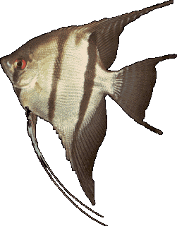

Elõfordulás
Megjelenése
Rendszertan
Változatai
A vitorláshalak alakja eltér a többi bölcsõszájú halétól. Testük korong alakú, oldalról lapított és úszóik megnyúltak, ami megnöveli magasságukat.
A vadon élõ vitorláshalaknak két faja ismert: a Pterophyllum altum és a Pterophyllum scalarae, melyeknek több színváltozatát tenyésztették ki. Egyes vélemények szerint csupán egy faj, a Pterophyllum scalare létezik, a többi természetes változat. Testhossza 12-15 centiméter. Alapszíne ezüstös, függõleges fekete csíkokkal, de ma már kitenyésztettek egyszínû és megnyúlt uszonyú változatokat is. Leggyakoribb színváltozatok: fehér, szürke füstös, fekete, márványmintás, tarka és arany.
Méltóságteljes megjelenésük, kecses úszásuk és gondos szülõi magatartásuk miatt igen népszerû halak.

Vigye az egeret a kép különbözõ részei fölé!